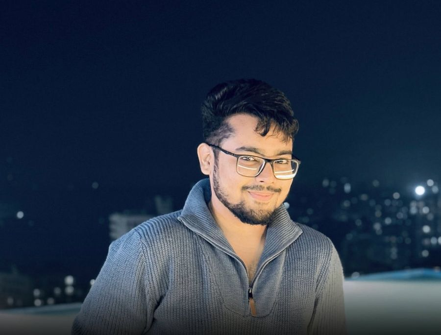
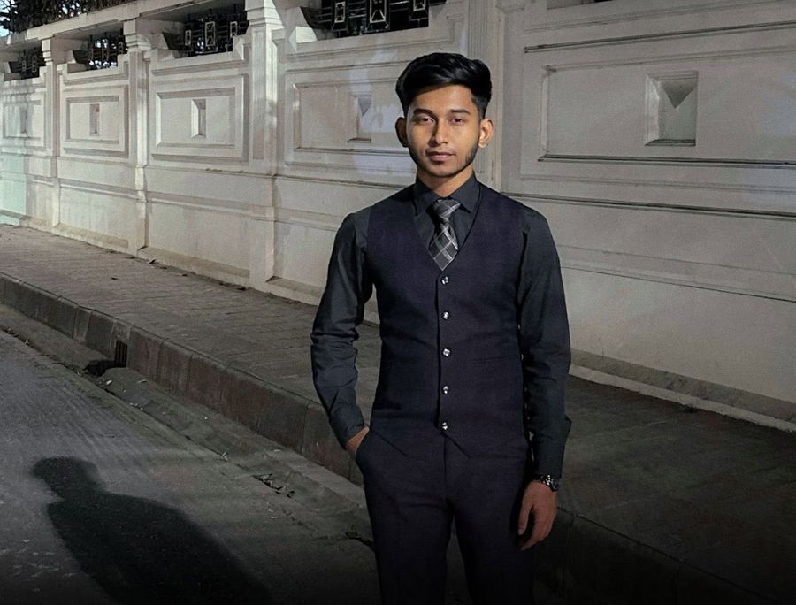
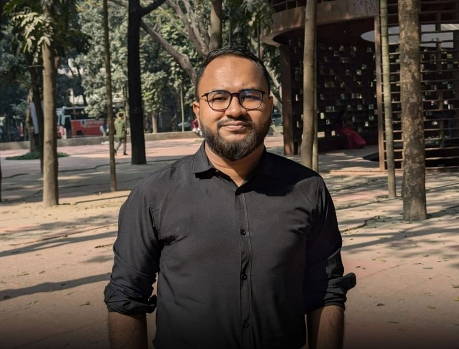
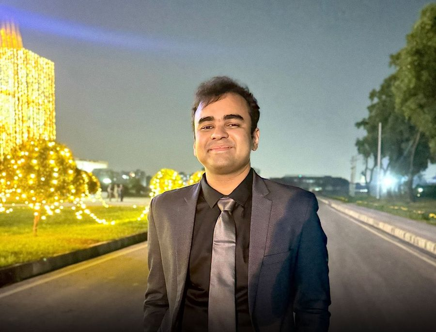
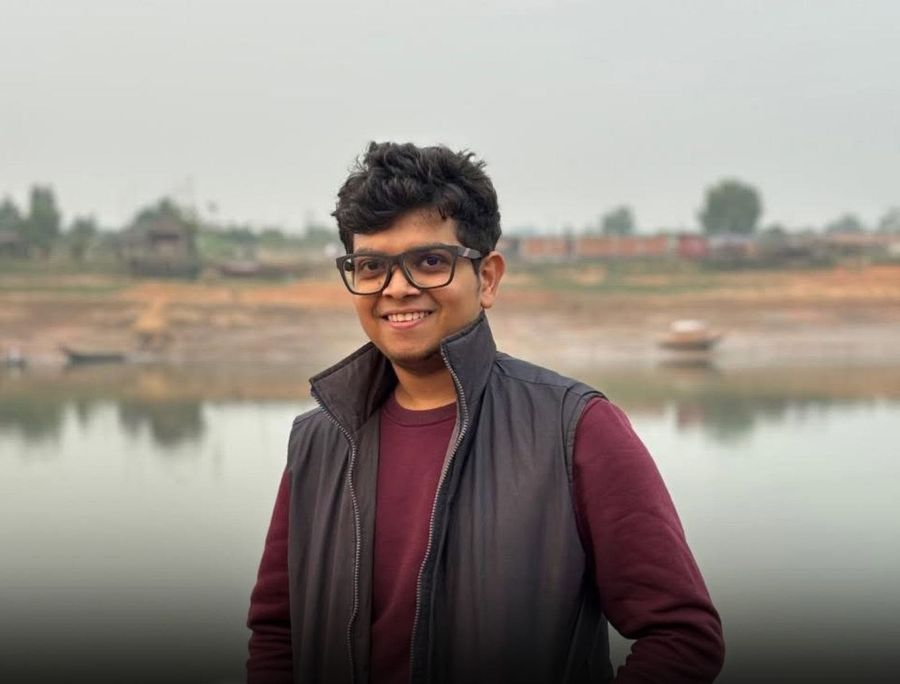
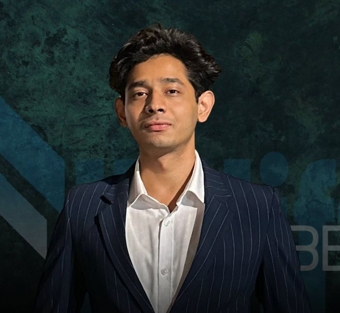
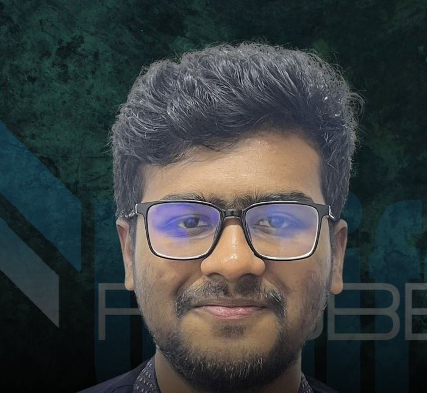
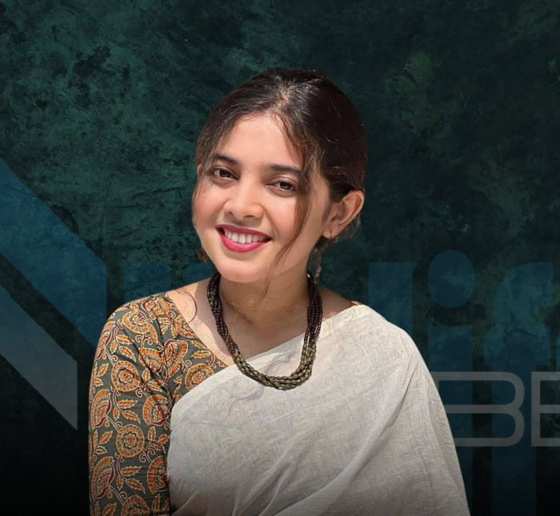
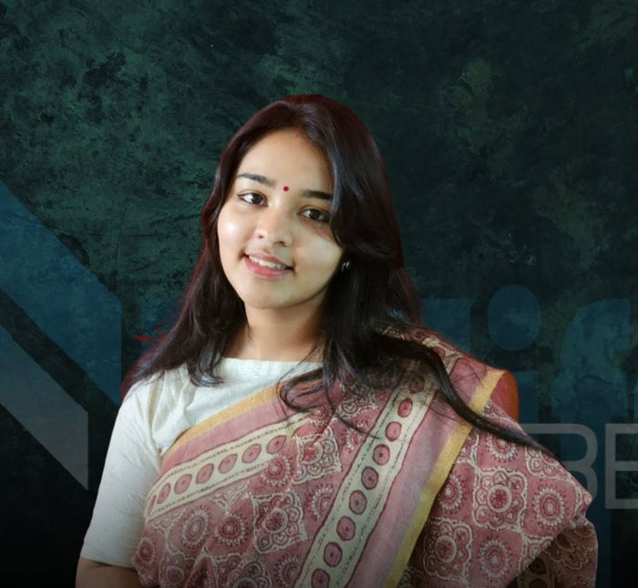
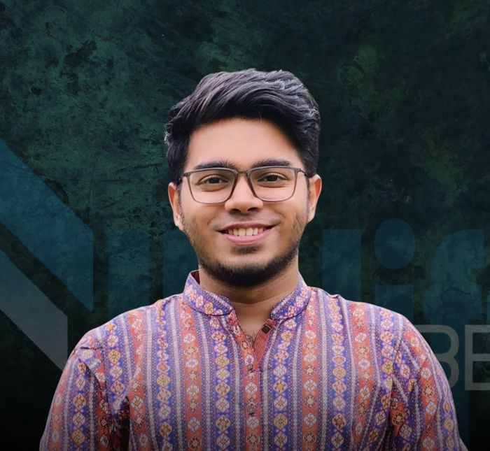

Team
The people who run Uplift Probe and the researchers training with us.
Core team

Mohammed Fahim Murshed
Founder and Executive Director
Fahim studies disaster management at the Institute of Disaster Management and Vulnerability Studies, University of Dhaka. His research looks at water and climate risk in coastal Bangladesh, and his paper on rainwater harvesting won the Best Paper Award (student category) at iCWEE-2025. He started Uplift Probe so that undergraduates would have a place to learn research and practise it.

Sakib Al Noor
Admin and Operations
Sakib keeps Uplift Probe organized. He served as Organizing Secretary of the DRMC Games and Sports Club and worked in the Documentation and Economic Affairs teams at DUNMUN, where he learned to run events that hold together under pressure.

Hasibul Hasan Hasib
Project Management and Content Creation
Hasib manages projects and leads content. He is Organizing Secretary of BEHDC and an active debater with a close interest in global affairs and sustainable development. He also facilitates training sessions for the research associates.

Mahir Tajwar Rahman
Finance and Corporate
Mahir looks after budgeting and partnerships. He studies business administration at Bangladesh University of Professionals, where he is Assistant Office Secretary of the BUP Global Affairs Council. He was a founding member and treasurer of the DRMC Model United Nations Association and a co-founder of Evolution of Youth.

Nafis Ahmed
Tech Lead
Nafis leads technology and design. He studies civil engineering at the Islamic University of Technology, where he is Creative Design Lead of the ACI IUT Student Chapter. He was a founding member of the DRMC Model United Nations Association and a co-founder of Evolution of Youth.
Researchers
Md. Nijam Uddin Sarkar
Senior Researcher
University of Dhaka

Ashfauzzaman Aronno
Bangladesh University of Textiles

Rahim Ahmed Druba
Al-Farabi Kazakh National University, Kazakhstan

Nahian Kibria Nuha
University of Dhaka

Noshin Tasnim
University of Dhaka

Ahmed Irtiza Rafid
University of Dhaka
Want to be on this page?
We recruit research associates and organizers. Our 2025 intake drew 48 applicants and is now closed.